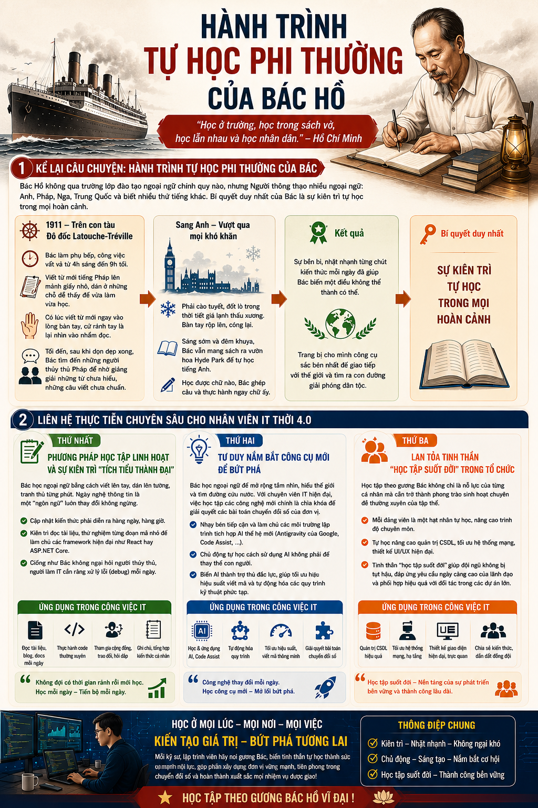

HÀNH TRÌNH TỰ HỌC
Kiên tâm trong học tập, giản dị trong đời sống, bền bỉ trước thử thách

Học để làm việc, học để làm người, học để phụng sự. Mỗi ngày một chút sẽ tạo nên sức mạnh bền vững cho cả hành trình dài.
1. Tự giác
Bắt đầu từ việc nhỏ nhất: đúng giờ, đọc sách đều, ghi chép cẩn thận. Tự giác là nền tảng của kỷ luật.
2. Kiên trì
Không nóng vội kết quả. Mỗi ngày tiến một bước, dù chậm nhưng chắc. Thành công là tổng hòa của nhiều ngày nỗ lực.
3. Phụng sự
Tri thức có giá trị nhất khi được dùng để giúp người khác. Học để phát triển bản thân và đóng góp cho cộng đồng.
"Đường đời là một hành trình dài, chỉ cần giữ vững niềm tin và không ngừng học hỏi, bạn sẽ đến được nơi mình mong muốn."